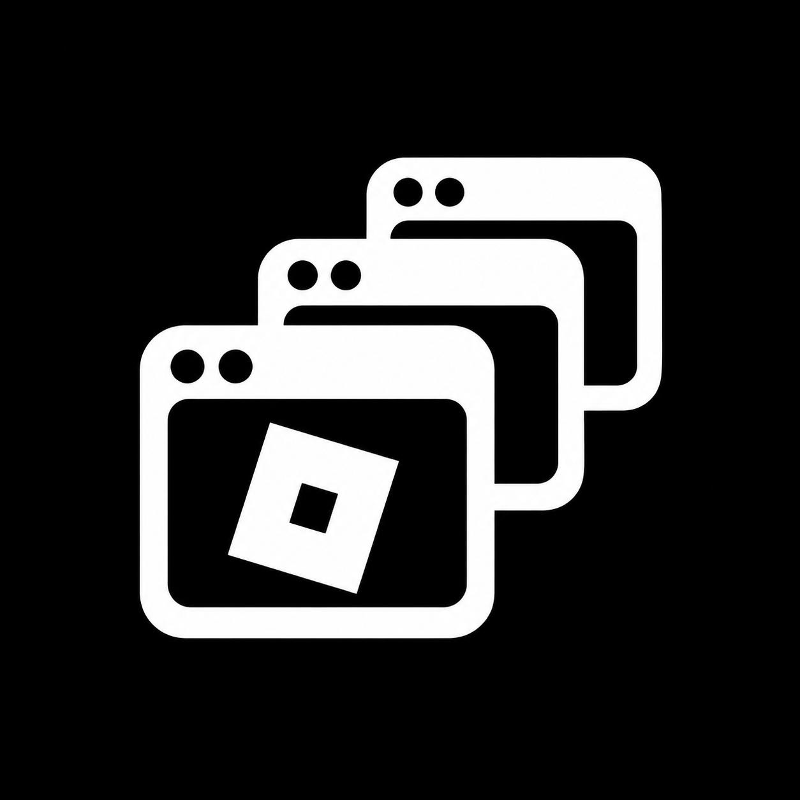
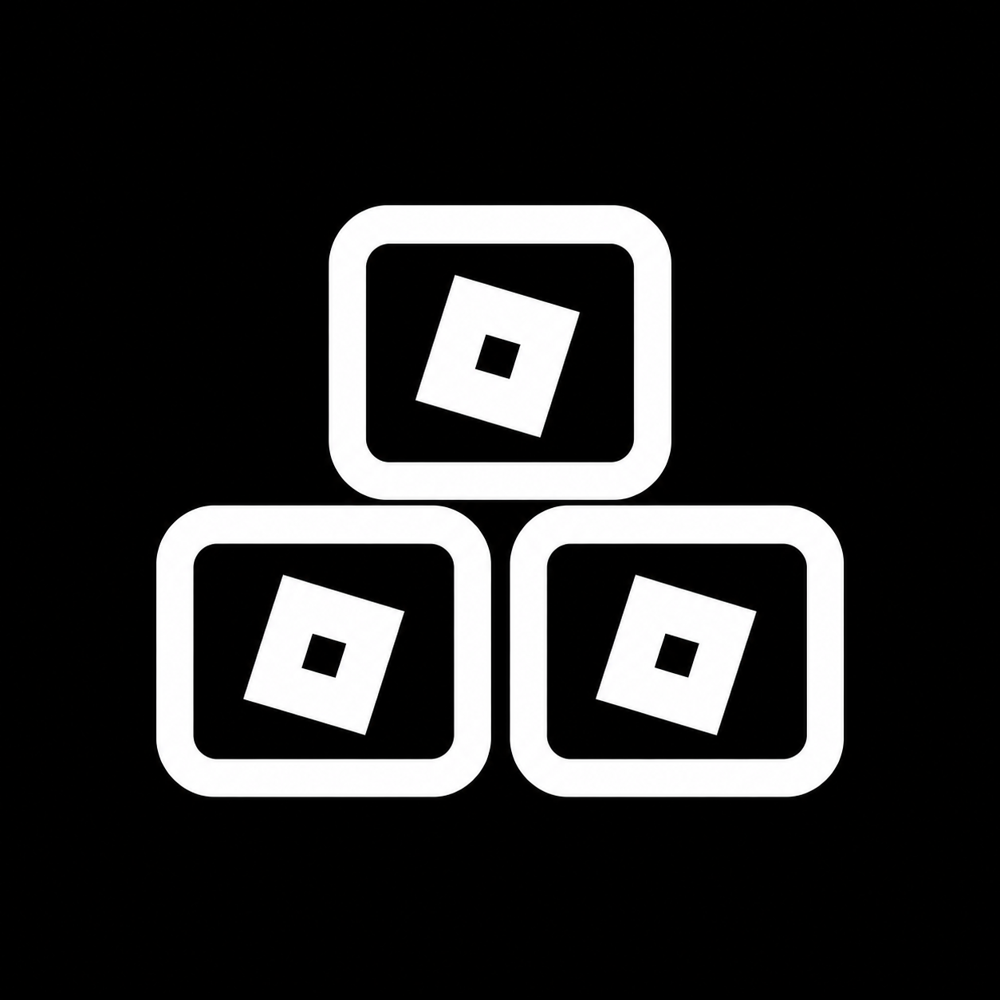
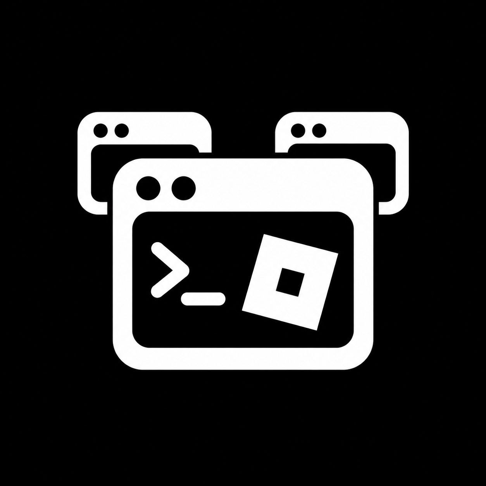
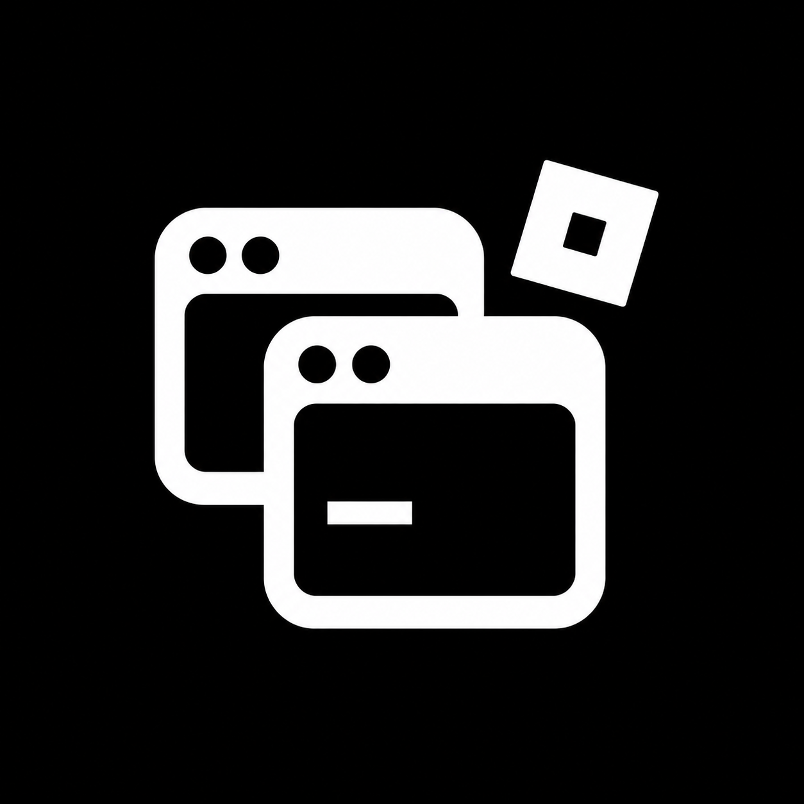
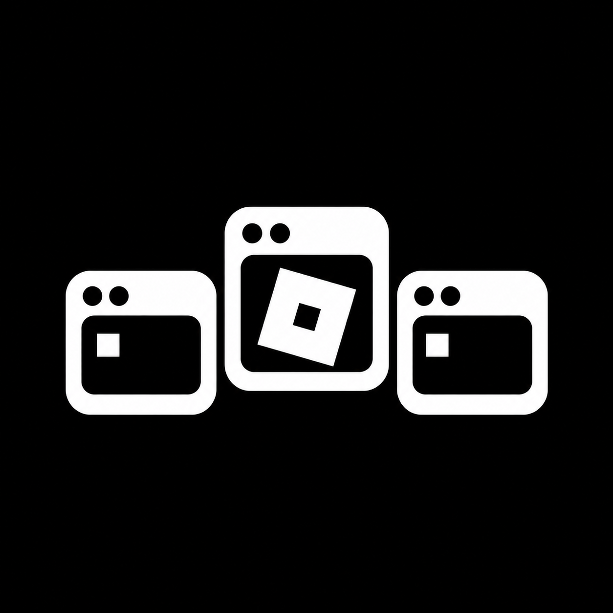

01 / Sobrepostos
02 / Piramide
03 / Terminal principal
04 / Selo Roblox
05 / CentralClique em uma imagem para abrir o arquivo original.

01 / Sobrepostos
02 / Piramide
03 / Terminal principal
04 / Selo Roblox
05 / Central